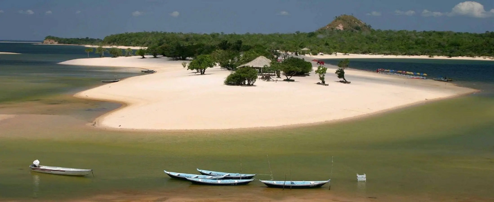
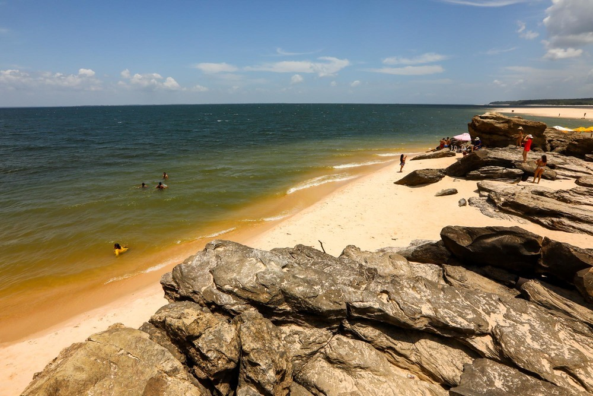
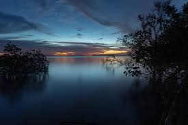

Ilha do Amor
Principal cartão-postal de Alter do Chão. Uma faixa de areia branca entre o Rio Tapajós e o Lago Verde, com água cristalina e morna. É perfeita para banho, descanso e tirar fotos incríveis.

Praia Ponta de Pedras
Praia de areia clara e pedras às margens do Rio Tapajós. Mais afastada e com pouca estrutura, é um paraíso quase intocado.

Flona
Área de preservação com trilhas ecológicas, árvores gigantes (como a Samaúma), rios e comunidades tradicionais. É um ótimo passeio para quem quer vivenciar a Amazônia de forma mais profunda.